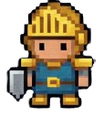

BÁSICO
+5 XP

¿QUÉ ES EL PMBOK?
El PMBOK es una guía que reúne las mejores prácticas para dirigir proyectos. Es como el "manual del aventurero" en gestión de proyectos.
INTERMEDIO
+10 XP

ÁREAS CLAVE DE CONOCIMIENTO
Tiempo ⏰
Costo üí∞
Calidad ⭐
Riesgos ⚠️
Cada área ayuda a que el proyecto llegue a su meta sin perder el rumbo.
AVANZADO
+15 XP

ENTREGA DE VALOR
El PMBOK busca que los proyectos no solo se completen, sino que aporten beneficios reales al equipo y a la organización.
95%
Satisfacción
88%
Eficiencia
92%
Calidad
INTERMEDIO
+10 XP

ADAPTACIÓN Y FLEXIBILIDAD
No todos los proyectos son iguales. El PMBOK permite ajustar sus métodos según el tipo de misión o contexto. ⚙️
Proyectos Pequeños
Proyectos Grandes
Proyectos Ágiles
Proyectos Tradicionales
EXPERTO
+20 XP
PMBOK v7 - LA EVOLUCIÓN
La nueva versión se centra en principios y resultados más que en procesos. Ideal para combinar métodos ágiles y tradicionales.
VERSIONES ANTERIORES
- Enfoque en procesos
- Estructura rígida
- Documentación extensa
PMBOK v7
- Enfoque en principios
- Flexibilidad adaptativa
- Resultados sobre procesos

Mentor PMBOK

Experto en Áreas

Especialista v7
Coach Adaptativo
¡Bienvenido, aventurero! Haz clic en las tarjetas para descubrir los secretos del PMBOK.
LOGROS PMBOK
Primera Lectura
+5 XP
Dominio de Áreas
+15 XP
Experto PMBOK
+30 XP